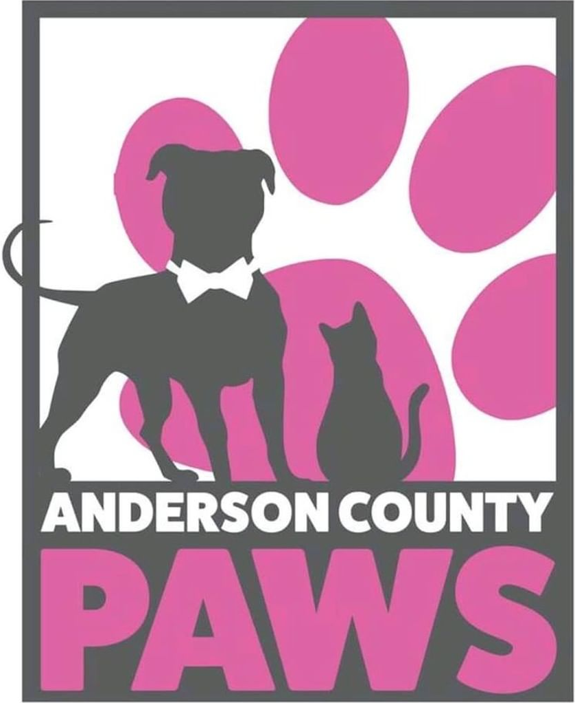
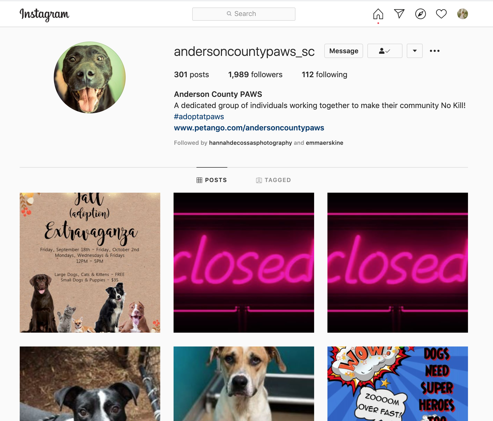

Primary Client Research
The primary research for this project came from analyzing the Anderson County P.A.W.S. webpage and social media platforms.
I chose this non-profit because I am passionate about everything PAWS stands for and the services they provice. I also believe that I could do some good for this organization, givign them a new brand identity and an entirely new website.
PAWS is the Humane Society of Anderson County. They are a No Kill community, the largest in the Upstate of South Carolina. They provide a variety of services including:
- Adoption
- Fostering
- Reuniting found pets
- Low-cost spay and neuter clininc
- Animal surrender
- Euthanasia
- Trap-Neuter-Release (TNR) Community cat program
PAWS's website is currently just a page on Anderson County's website. The logo is shown in the upper right-hand corner, and an image of the front of the building is shown as the cover banner. Other than that, everything on the site is according to the branding of Anderson County, not Paws branding. Honestly, PAWS doesnt have much in terms of branding, besides a neon pink logo that only appears on their webpage, a few images and graphics throughout their social media, and as a decal on their vehichles.
 